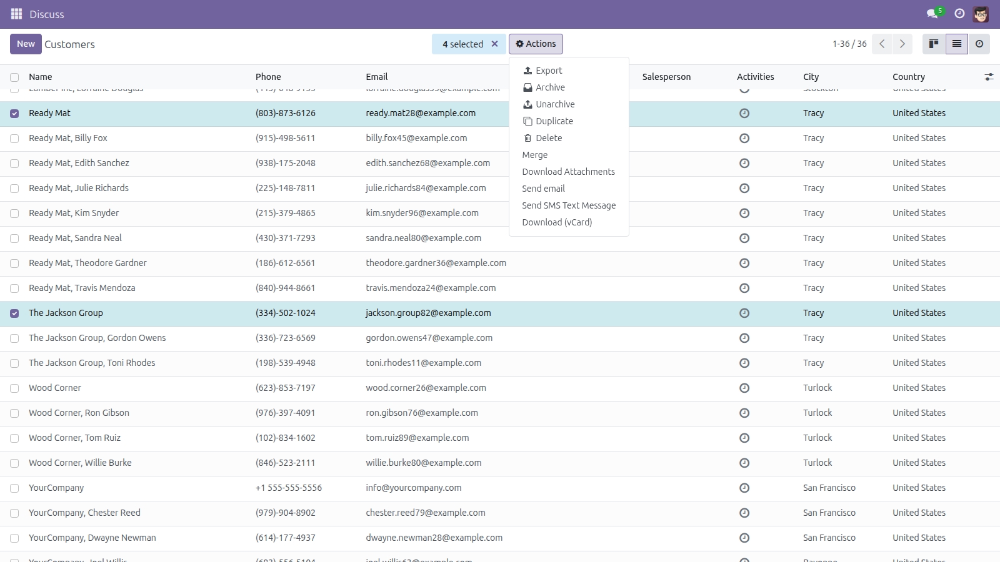
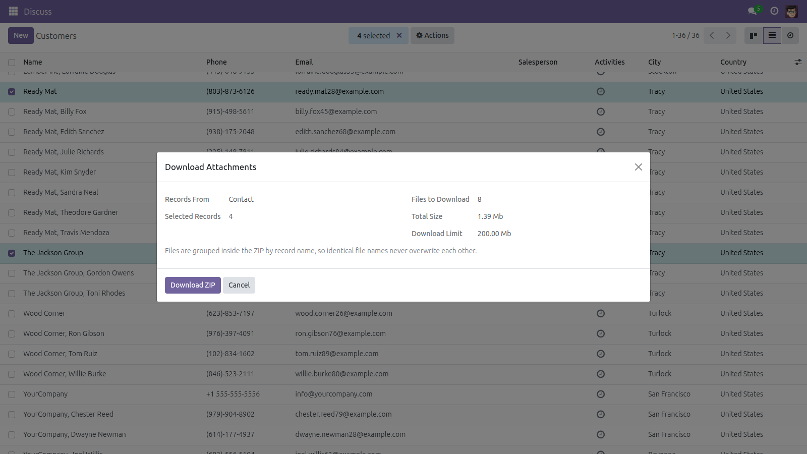
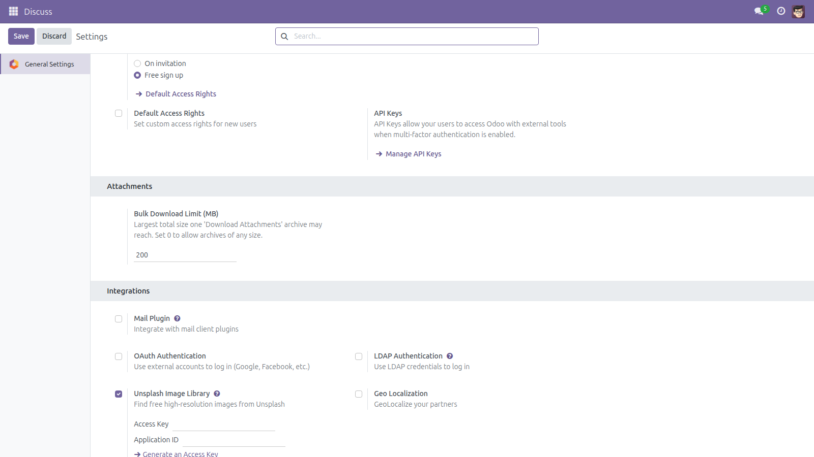

Download Attachments in Bulk
Select the records — get every file back as one ZIP.
Odoo downloads files one at a time. Collecting the signed contracts of thirty customers means opening thirty forms and clicking thirty times. This module adds a Download Attachments entry to the Action menu: tick the records, check how many files and how many megabytes that represents, and download them all as a single ZIP.
Free and open source (LGPL-3), Odoo 14.0 through 19.0.
- You see the size before you click — number of files, total size and the configured limit are shown in the dialog.
- No overwritten files — every file is stored as
<record name>/<file name>, so two records with the same contract.pdf both survive. Two identical names on the same record become contract.pdf and contract (2).pdf.
- Access rights are respected — the archive holds the same set of files Odoo itself would let you download; attachments of records you may not read are left out instead of breaking the download. No attachment or record is ever read with elevated rights.
- A safety limit — a selection over the configured total (200 MB by default), or of more than 5000 records, is refused with a clear message instead of exhausting the server.
- No empty files — a document whose stored blob is missing from the filestore is skipped and logged, never handed over as a plausible-looking empty PDF.
- Nothing is modified — this module only reads. It never edits, moves or deletes an attachment or a record.
Screenshots

Select any records in a list and pick Actions → Download Attachments.

The dialog reports the number of files, the total size and the limit before anything is built.

Settings → General Settings → Attachments: raise or remove the total size limit.
Installation
- Copy the
attachment_bulk_download folder into your addons path.
- Open Apps, click Update Apps List, search for Download Attachments in Bulk.
- Click Install. Only the standard
base_setup module is required.
Configuration
- Go to Settings → General Settings → Attachments and set Bulk Download Limit (MB). The default is 200 MB; 0 removes the limit.
- The action is available on Contacts immediately after installation.
- To offer it on another model, open Settings → Technical → Actions → Window Actions (developer mode), find Download Attachments and set that model in its bindings.
- Every internal user (Employee) may use the action; each user still only ever receives the files they are allowed to read.
Usage
- Open a list view and tick the records whose documents you need.
- Choose Actions → Download Attachments.
- Check the file count and total size shown in the dialog, then click Download ZIP.
- The archive is served by a dedicated controller that re-checks your access rights, and lands in your browser's downloads.
Good to know
- Only files attached to a record are included — the ones listed in the record's Attachments/paperclip area. Images stored inside a binary field (a contact photo, a product image, a company logo) are part of the record itself, not attachments, and are not in the archive. This is the same set of files Odoo's own Attachments list shows.
- Attachments of type URL (a link rather than a stored file) have no content to put in a ZIP and are skipped.
- The archive is built in memory, which is why the size limit exists: peak usage is roughly twice the limit per download in progress. On a small server, or with many users downloading at once, lower it.
- A single download covers at most 5000 selected records.
- The action is bound to Contacts out of the box; other models are one configuration step away (see Configuration above).
Version notes
Identical behavior on every supported series (14.0 – 19.0).
License: LGPL-3 · Source on GitHub · Issues and contributions welcome.